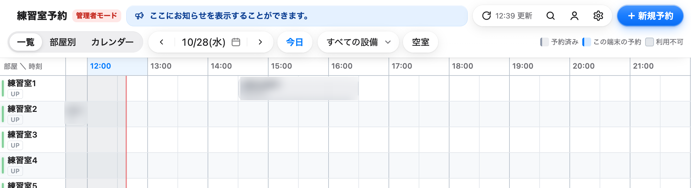
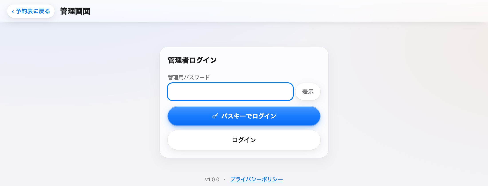
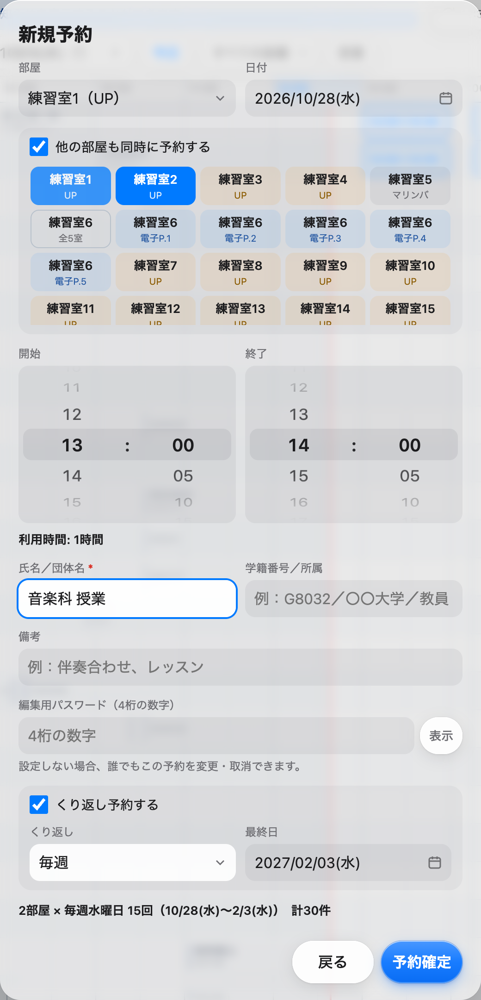
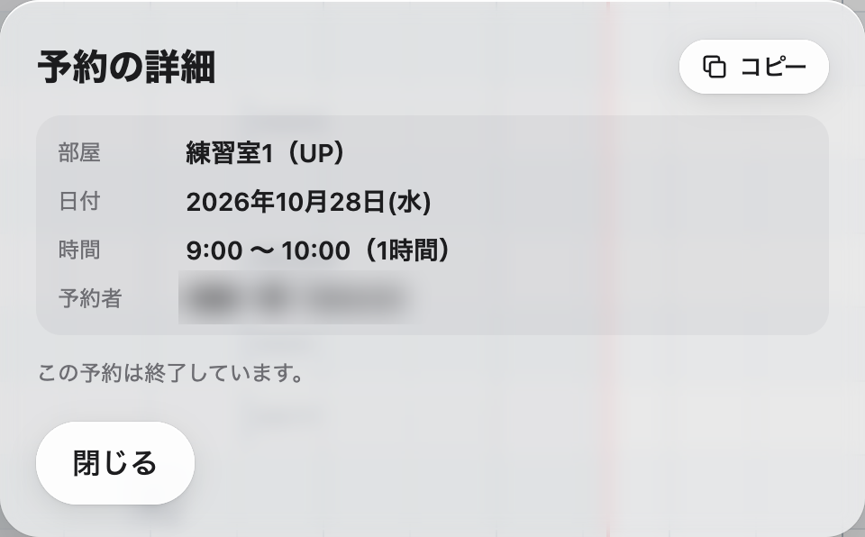
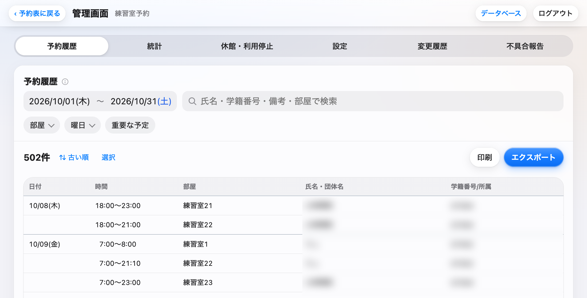

練習室予約システム
管理者画面の使い方
演習室の予約と一括予約は、管理者ログインをすると使えるようになります
一般の利用者の画面には、演習室などの限定公開の部屋や、くり返し予約・複数部屋の同時予約が出てきません。次の手順で管理者モードに入ると、いつもの予約表から予約できます。
- 予約表の右上の歯車のボタンを押し、管理画面を開きます。PC では歯車の横に「管理」と出ています。
- 「管理者ログイン」で管理用パスワードを入れ、ログインを押します。パスキーを登録した端末なら、青い「パスキーでログイン」でも入れます。
- 左上の‹ 予約表に戻るを押します。タイトルの横に赤い管理者モードの札が出ていれば準備は終わりです。
- あとは空いている所を押すか「＋ 新規予約」から予約します。演習室も部屋の一覧に並び、予約画面には「くり返し予約する」「他の部屋も同時に予約する」が出ます。
管理者モードは、管理画面にログインした同じタブの中だけで続きます。別のタブで予約表を開き直すと一般の画面に戻るので、そのときはもう一度ログインしてください。
管理用パスワードは、この文書には書いていません。責任者の教員またはシステム担当者から受け取ってください。文書中の画面の写真は本番の画面で、予約した人の名前と学籍番号はぼかしています。
1. 管理者モードでできること
管理者モードの予約表では、一般の利用者には出てこない操作が加わります。
| できること | 内容 |
|---|---|
| 演習室などの予約 | 予約制限が「限定公開」の部屋（演習室など）が表に並び、予約・変更・取消ができます。一般の利用者には、部屋があること自体が表示されません。 |
| 管理者のみの部屋の予約 | 予約制限が「管理者のみ」の部屋を、管理用パスワードを入れ直さずに予約・変更・取消できます。 |
| 一括予約 | くり返し予約（毎週・隔週・毎日）と、他の部屋の同時予約ができます。予約のコピーもここに入ります。設定で全員に許可しているときは、一般の利用者も使えます。 |
| 他の人の予約の変更・取消 | 編集用パスワードを知らなくても、どの予約でも変更・取消ができます。 |
| 重要な予定の色 | 予約画面で赤・紫・緑を選ぶと、予約表でその予約の帯に色が付き、文字が太くなります。 |
| 予約の制限を受けない | 設定の「1回の最大予約時間」「予約受付期間」の制限がかかりません。 |
| お知らせの書き換え | 予約表の上部のお知らせを押すと、その場で内容と種類を書き換えられます。 |

2. ログインとログアウト
2.1 ログインする
- 予約表の右上の歯車を押します。管理画面のアドレスを直接開いてもかまいません。
- 「管理用パスワード」の欄にパスワードを入れ、下の「ログイン」を押します。「表示」を押すと、入れた文字を確かめられます。パスキーを登録した端末では、上の青い「パスキーでログイン」を押し、Face ID などで入ります。
- 上部に「予約履歴」「統計」「休館・利用停止」「設定」「変更履歴」「不具合報告」のタブが出たらログインできています。

- 管理用パスワードを全体で10回続けて間違えると、10分間ログインできなくなります。一度ログインしたことのある端末は端末ごとに数えるので、ほかの人の誤入力で止められることはありません。
- パスキーは、Face ID・Touch ID・端末のロック解除で管理画面に入る方法です。使う端末で一度ログインし、「設定」タブの「パスキー」で「この端末を登録」を押すと使えるようになります。パスキーで入ったときは、12時間たつと入り直しになります。
- 同じタブで管理画面を開き直したときは、自動でログインし直します。
2.2 管理者モードを終える
予約表のタイトルの横の「管理者モード」の札を押し、「管理者モードを終了しますか？（管理画面からもログアウトします）」で OK を押します。管理画面の右上の「ログアウト」でも終えられます。タブを閉じても管理者モードは終わります。研究室や教室の共用パソコンで使ったときは、終えてから席を離れてください。
3. 演習室を予約する
- はじめの囲みの手順で管理者モードに入ります。
- 予約表に演習室などの限定公開の部屋も並んでいることを確かめます。部屋が多いときは、上のすべての設備の絞り込みで部屋の種類を選ぶと探しやすくなります。
- PC では空いている所をクリックします（ドラッグで時間を指定できます）。スマホでは空いている所をタップし、出てきた「＋予約」の帯をもう一度タップします。「＋ 新規予約」やスマホの右下の「＋」から開くこともできます。
- 部屋・日付・開始と終了の時刻を確かめ、氏名／団体名を入れます。学籍番号／所属・備考・編集用パスワードは任意です。授業名などは備考に書けます。
- 予約確定を押します。表にその予約の帯が出れば完了です。
- 演習室を学生など一般の利用者にも使わせるときは、「設定」タブの「限定公開の部屋」で演習室などのパスワード（6文字以上）を決め、入口の URL と一緒に使う人だけに伝えます。この URL から開いてパスワードを入れた端末では、演習室が表示・予約できるようになります。限定公開のパスワードを知っていても、設定の変更や他人の予約の取消はできません。
- 限定公開のパスワードを変えると、覚えていた端末でも演習室が表示されなくなります。使う人に新しいパスワードを伝え直してください。
4. 一括予約（まとめて予約）
授業や行事で同じ時間を何週も押さえるときや、いくつもの部屋を同時に押さえるときに使います。どちらも予約画面の中で選び、組み合わせることもできます。予約できる件数は「部屋の数×日数」で数え、設定の「まとめて予約の最大件数」までです。
4.1 くり返し予約
- 最初の1回分の部屋・日付・時刻・氏名を入れます。
- くり返し予約するにチェックを入れます。
- 「くり返し」で毎週・隔週・毎日のどれかを選び、最終日を決めます。
- 下に何件になるかが表示されます。確かめてから「予約確定」を押します。
4.2 他の部屋も同時に予約
- 他の部屋も同時に予約するにチェックを入れます。
- 部屋のボタンを押して選びます。選んだ部屋は青くなり、もう一度押すと外れます。上で選んだ部屋は外せません。同じ名前の部屋がいくつもあるときは、先頭の「全◯室」のボタンでまとめて選べます。
- くり返し予約と組み合わせると、選んだ部屋それぞれに同じくり返しで予約が入ります。

4.3 予約できない日があったとき
ほかの予約と重なるなど、予約できない日があると、予約は入らず「◯件中◯件は予約できません。」と、その日の一覧が出ます。ボタンが「予約できる◯件だけ予約」に変わるので、それを押すと重ならない分だけ予約されます。日付や時刻を直してやり直すこともできます。
4.4 予約のコピー
すでにある予約と同じ時間・氏名で、別の日や別の部屋に予約を足すときに使います。
- 予約の帯を押して詳細を開き、見出しの右の「コピー」を押します。スマホでは重なった四角の絵です。
- 「日」で7日分のボタンから日を選びます。‹ と › で1週間ずつ動かせます。今日より前と定休日は選べません。
- 「部屋」で部屋を選びます。日も部屋も複数選べ、「選んだ日×選んだ部屋」から元の予約と同じ組み合わせを除いた分が予約されます。
- くり返し予約も使えます（毎週・隔週）。「予約確定」を押します。
4.5 まとめて変更する・途中で終える
一括予約で入れた予約は、1件ずつ変えることも、ある日から先をまとめて変えることもできます。
- まとめて変更 その日の予約を開いて「変更」を押し、「同じまとめ予約のうち、この日以降の分もまとめて変更する」にチェックを入れて保存します。まとめて変わるのは時間・氏名／団体名・学籍番号／所属・備考で、日付と部屋はそれぞれのままです。
- 途中で終える 取り消したい最初の日の予約を開き、「同じまとめ予約のうち、この日以降の分（全部屋）をまとめて取り消す」にチェックを入れて「取消」を押します。
4.6 管理者モードに入っていないとき
管理者モードでなくても、設定で一括予約が管理者だけになっている場合は、予約画面に「管理用パスワード（まとめて予約は管理者のみ）」の欄が出ます。ここに管理用パスワードを入れても予約できます。ただし演習室などの限定公開の部屋は、管理者モードか限定公開のパスワードがないと表に出てきません。
5. 予約の変更と取消
管理者モードでは、どの予約でも編集用パスワードなしで変更・取消できます。予約の帯を押すと詳細が開き、「管理者モード: 編集用パスワードなしで変更・取消できます。」と表示されます。
- 変更 「変更」を押し、内容を直して「変更を保存」を押します。PC では予約の帯をつかんで別の時間や部屋へ動かすこともでき、離すと変更の画面が開きます。
- 取消 「取消」を押すと確認なしで表から消え、下に「予約を取り消しました 元に戻す」が5秒出ます。間違えたときは、その間に「元に戻す」を押してください。
- 終わった予約は予約表では変更・取消できず、詳細に「この予約は終了しています。」と出て、「変更」「取消」のボタンも出ません。消す必要があるときは、管理画面の「予約履歴」で選んで削除します。

6. 管理画面のタブ
ログインすると、上部にタブが並びます。スマホでは名前が短くなります（予約履歴は「履歴」、変更履歴は「変更」など）。

6.1 予約履歴
期間・部屋・曜日・検索で絞った予約の一覧です。開いたときは今月の1日から末日までが出ます。検索は氏名・団体名・学籍番号／所属・備考・部屋名から探します。「重要な予定」を押すと、色を付けた予約だけになります。一度に扱えるのは2年分までで、画面の一覧は2000件までです。
- 行を押すと、その予約の情報（備考・まとめ予約かどうか・重要な予定の色など）が下に開きます。件数の右の「古い順」を押すたびに、並び順が入れ替わります。
- 「印刷」と、「エクスポート」の CSV・Excel・PDF は、今の一覧と同じ条件で作ります。印刷と PDF は、入れる項目（時間・部屋・氏名・団体名・学籍番号／所属・備考）を選んでから実行します。名前と学籍番号が入るので、ファイルや紙の扱いに気をつけてください。
- 「選択」を押すと行を選べるようになり、赤い「◯件を削除」で選んだ予約を削除できます。過去の予約も消せますが、元に戻せません。
6.2 統計
今週・今月・先月・今年度の中から期間を選ぶと、予約件数・合計時間・1件あたりの時間・いちばん混む曜日と時間帯が出ます。曜日と時刻ごとの混み具合を色の濃さで見せる表と、設備ごと・部屋ごとの利用の割合もあります。名前ごとの集計はありません。
6.3 休館・利用停止
調律・入試・清掃などで予約を受け付けない日時を登録します。日付・対象の部屋（何も選ばなければ全室）・終日か時間帯か・理由を入れて「追加」を押すと、すぐ保存されます。すでに入っている予約は自動では取り消されないので、重なる予約があれば予約者に連絡のうえ取り消してください。毎週決まった曜日が休みなら、「設定」の定休日を使います。
6.4 設定
| 項目 | 内容 |
|---|---|
| 一般 | 予約表のタイトル、お知らせとその種類（通常は青、重要は赤）、利用開始・終了時刻、予約単位、1回の最大予約時間、予約受付期間、定休日、まとめて予約の最大件数、まとめて予約を管理者だけにするかどうか。保存すると、利用者の画面には最大1分後に反映されます。 |
| 限定公開の部屋 | 演習室などのパスワード（6文字以上）と、入口の URL のコピー。空欄なら管理者以外は使えません。 |
| 予約表全体の閲覧制限 | ふだんは使いません。決めると、利用者全員が予約表を開くときにパスワードを求められます。 |
| パスキー | 「この端末を登録」で、その端末をパスキーで入れるようにします。使わなくなった端末や、担当を外れた人のパスキーは削除してください。 |
| 管理用パスワードの変更 | 新しいパスワード（6文字以上）を2回入れて「変更する」。変えると、ほかの端末の管理者モードやパスキーでのログインは入り直しになります。 |
| りざぶ郎から取り込む | りざぶ郎の予約表の「CSVダウンロード」で保存したファイルを選び、「取り込む」を押すと、中の予約がこの予約表に入ります。同じ予約がすでにあるものと、ほかの予約・休館と重なるものは入りません。 |
| 練習室 | 部屋の追加・削除・名前・特徴タグ・設備区分・予約制限（なし／管理者のみ／限定公開／使用停止）・備考。並び順は左端の番号をつまんでドラッグします。今日以降の予約が残る部屋は削除できないので、使用停止にします。 |
一般と練習室は、変えたあと「保存」を押すまで反映されません。保存していない変更があると「未保存の変更があります」と出て、「設定」のタブに赤い点が付きます。
6.5 変更履歴
予約・変更・取消・削除と、管理画面での設定・部屋・休館・パスワードの変更の記録を、新しい順に見られます。「予約が消えた」「勝手に変えられた」という問い合わせのときに使います。種類（すべて・予約・変更・取消・設定）と検索で絞り込め、一度に200件ずつ出て、続きは「さらに読み込む」で出します。パスワード類は「変更」とだけ記録し、中身は残しません。
6.6 不具合報告
利用者が予約表の「不具合を報告」から送った内容の一覧です。状態（未対応・対応中・対応済み・対応しない）を選ぶとすぐ保存されます。タブの数字は、未対応と対応中の件数です。
6.7 データベース
上部の「データベース」を押すと、予約のスプレッドシートが開きます。開けるのは、スプレッドシートが共有されている Google アカウントだけです。
7. よくある問い合わせ
| こんなとき | すること |
|---|---|
| 演習室が予約表に出てこない | 管理者モードに入っているか、タイトルの横の札で確かめます。別のタブで開いた予約表では管理者モードになりません。 |
| くり返し予約の欄が出てこない | 同じく管理者モードかどうかを確かめます。予約の変更の画面には出ません。 |
| 授業で毎週予約したい | 4.1 のくり返し予約で「毎週」を選び、最終日を学期の終わりにします。 |
| 授業の予約を学期の途中で終える | 4.5 のとおり、最初に消したい日の予約を開いて、この日以降をまとめて取り消します。 |
| 学生が編集用パスワードを忘れた | 管理者モードで、その予約を変更・取消します。 |
| 学生が編集用パスワードを5回間違えて操作できない | 10分待てば操作できます。急ぐときは管理者モードで対応します。 |
| いたずらの予約がある | 管理者モードで取り消します。記録は変更履歴に残ります。 |
| 管理用パスワードを10回間違えた | 10分待ってからやり直します。 |